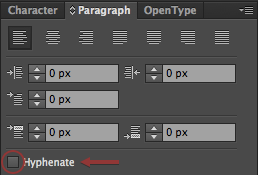

LITTLE THINGS
Small yet important things I've learned over the years
Rounded corners
They've gotten easier
-
Hyphenation is stupid
Just makes reading long blocks of text more agg-
ravating to do

That example is for Photoshop, but you can do it in any Adobe program.
Fit repeating icons in circles
It looks better than when you try to fit them into squares
Distribute Horizontal
It's your best friend
Annotate your wireframes
I like actually knowing what things are
Don't git pull, ever
Do a fetch and merge instead
- This lets you check the Git log so you can see what you're getting into first.
- Lets you foresee merge conflicts easier. Helpful, because ain't nobody got time for merge conflicts.
- This article explains it better.